Real satellite globe, slowly turning toward South Asia.
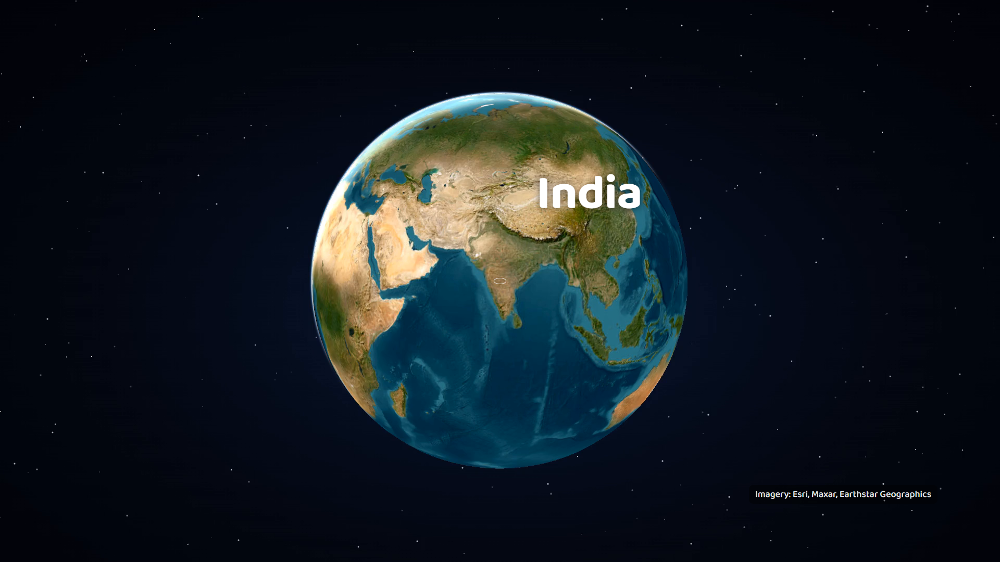
The camera dives; “India” lands as the subcontinent fills the frame.
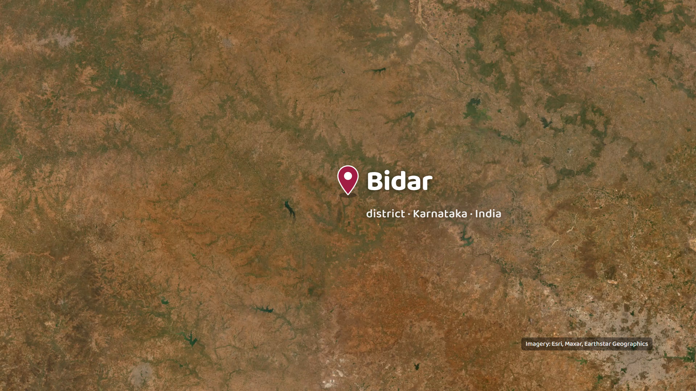
“Karnataka”, then the camera holds on Bidar: a cherry pin drops onto the exact spot with a ripple.
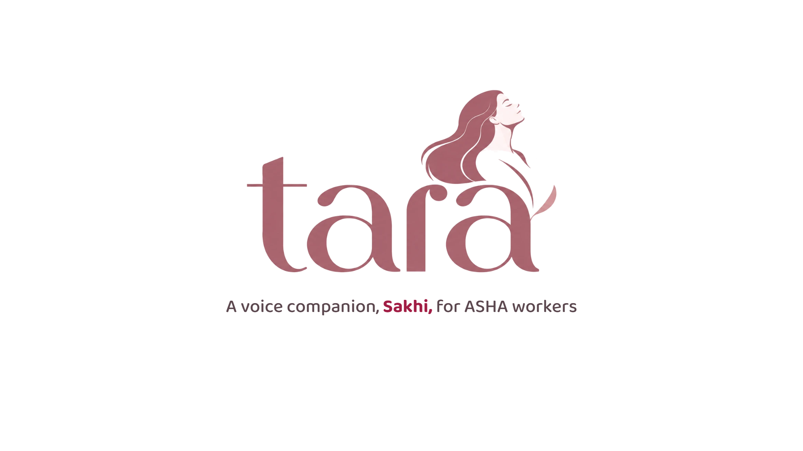
An iris opens from the pin onto white; the Tara mark builds from its own layers, letter by letter.
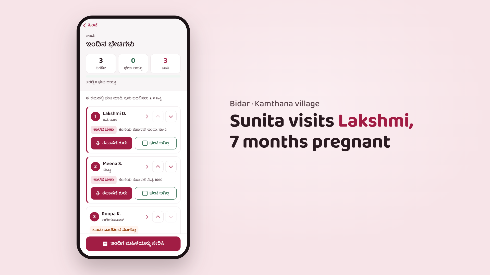
The real ASHA app: Home, tap into Today's visits, tap “Start check-in” for Lakshmi.
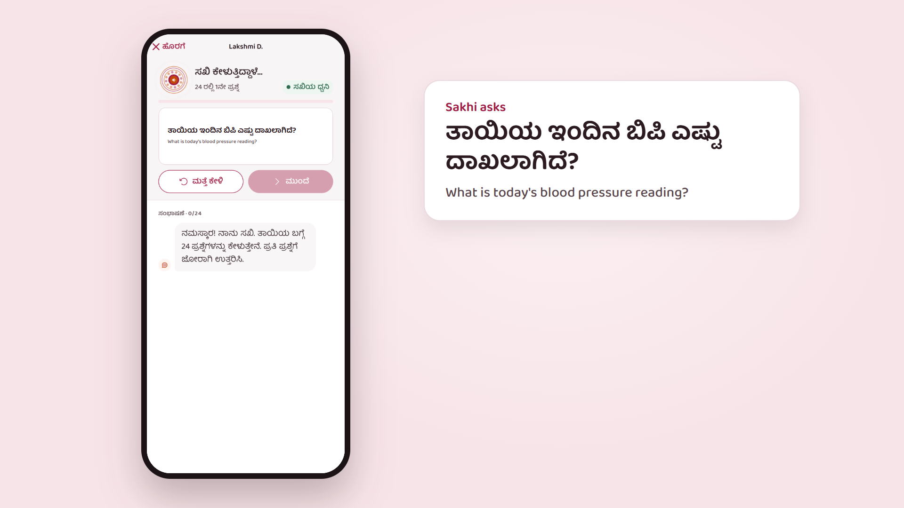
The question card lifts out of the phone, big and bilingual. Sakhi's real voice asks it in Kannada.
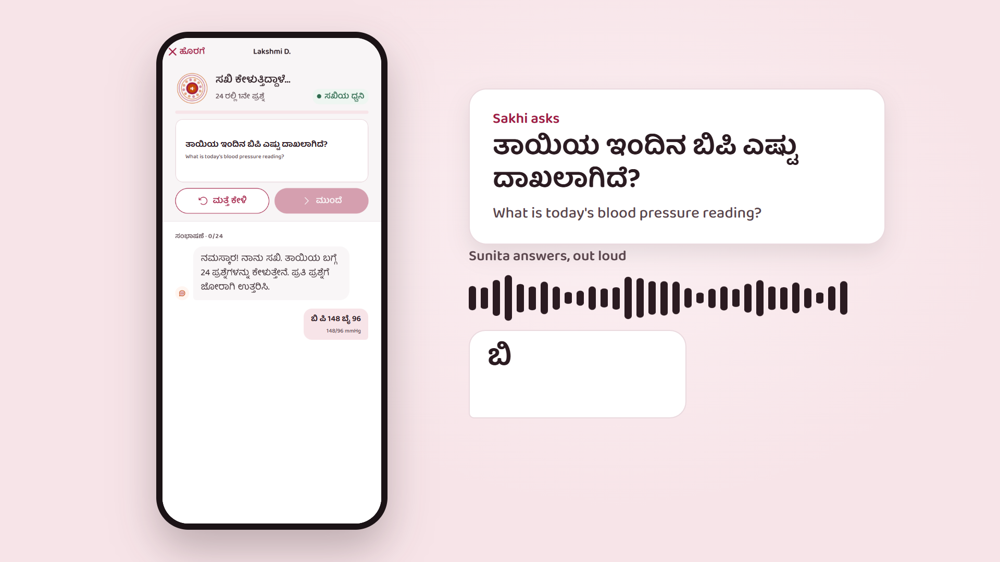
Sunita answers out loud: a live waveform, and her words arrive as text.
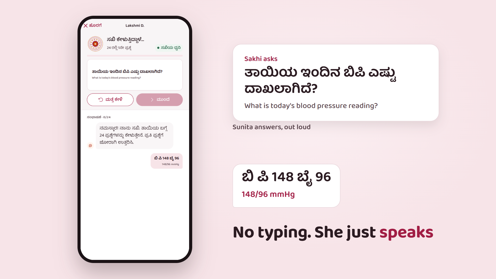
The record the app keeps: 148/96 mmHg. Then the line.
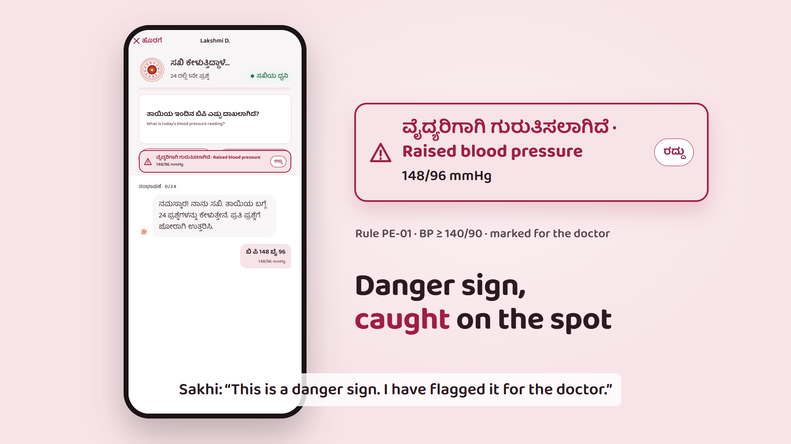
The app's own alert: raised blood pressure, marked for the doctor, rule PE-01. Sakhi says so, out loud.
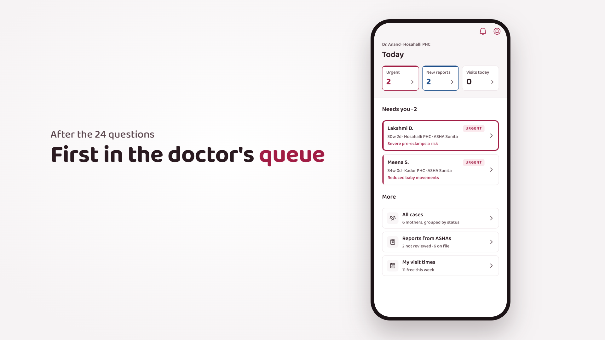
The alert flies into the doctor's phone, straight to the top of “Needs you”.
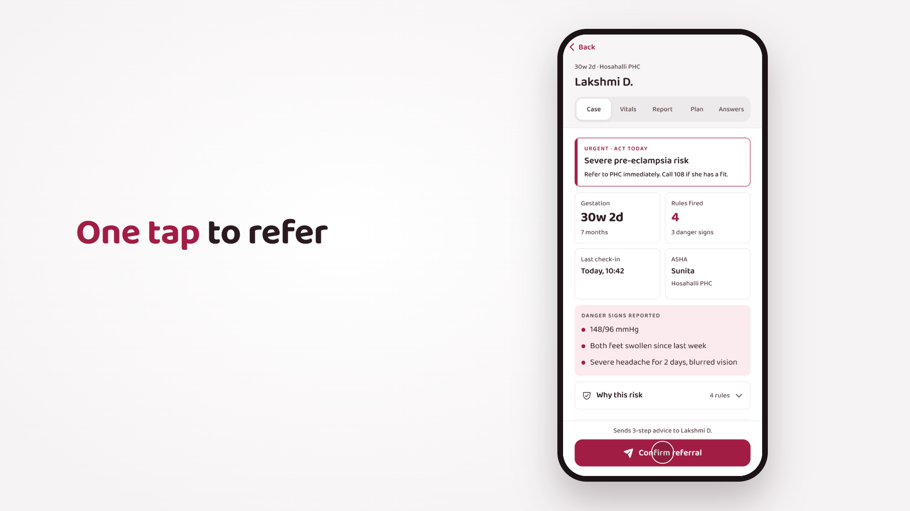
Lakshmi's case opens; one tap on Confirm referral.
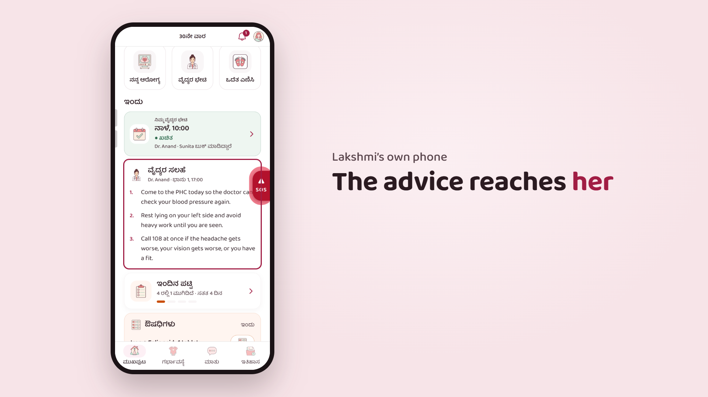
Whip to Lakshmi's own phone: the doctor's advice is on her Home.
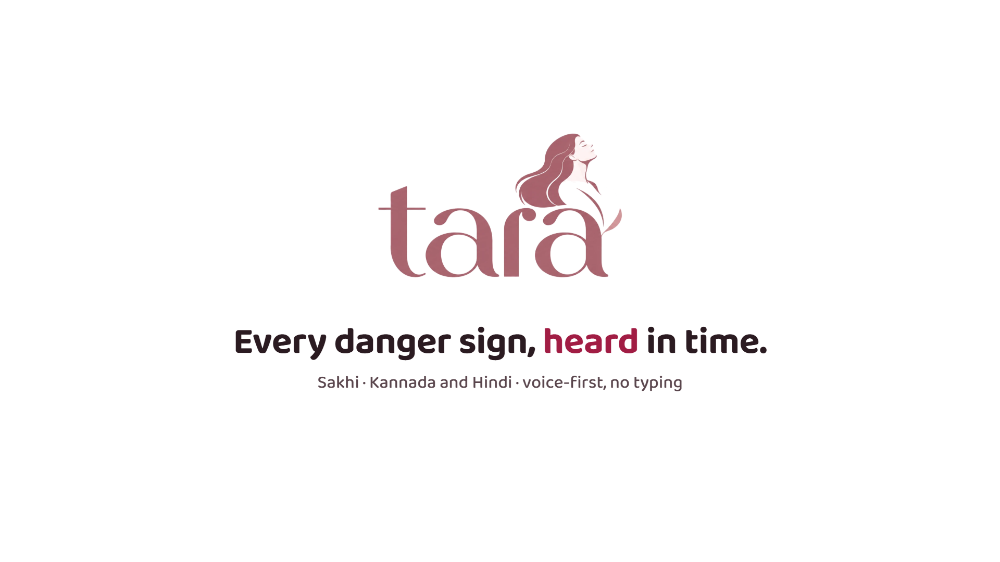
Her phone dissolves into white; the Tara mark builds again with the line.